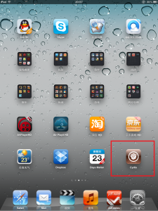
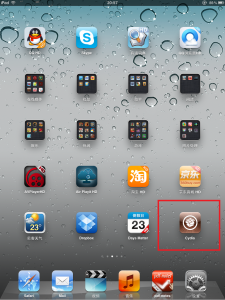

分享iPad2越狱工具
附图：

工具是傻瓜式的一键越狱，跟除夕时候放出的命令行越狱工具没太大本质区别，不过GUI工具却是修复了一些小bug，所以对需要的朋友还是推荐使用GUI工具。 ：）
下面是工具的下载地址：
本博客所有文章除特别声明外，均采用 CC BY-NC-SA 4.0 许可协议。转载请注明来源 all4fun blog！
 微信
微信 支付宝
支付宝
评论
附图：

工具是傻瓜式的一键越狱，跟除夕时候放出的命令行越狱工具没太大本质区别，不过GUI工具却是修复了一些小bug，所以对需要的朋友还是推荐使用GUI工具。 ：）
下面是工具的下载地址：